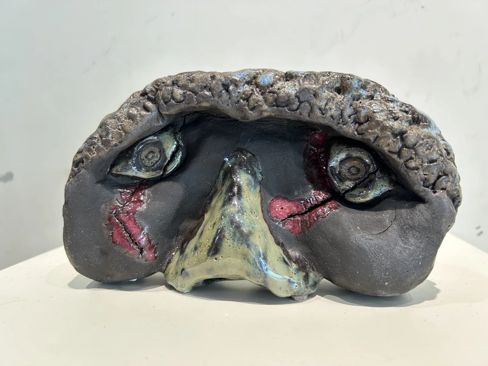
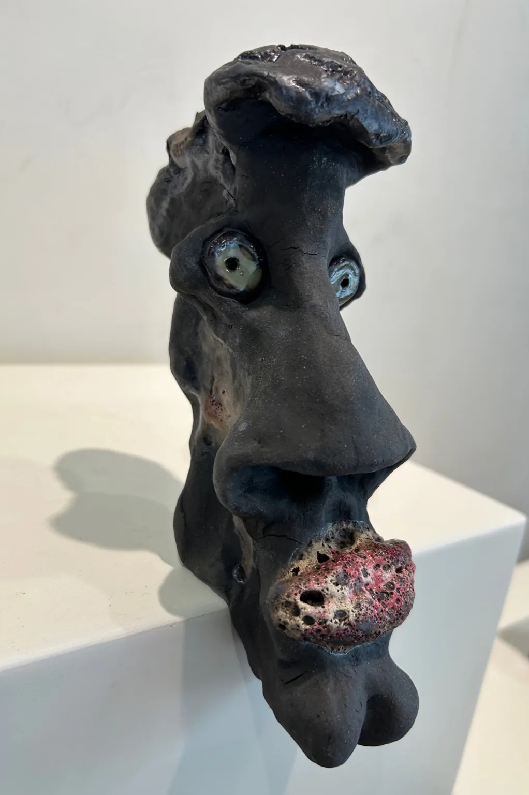
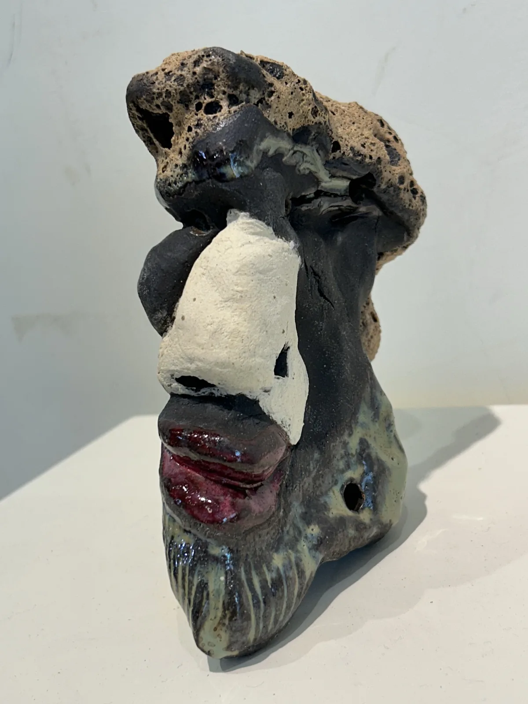
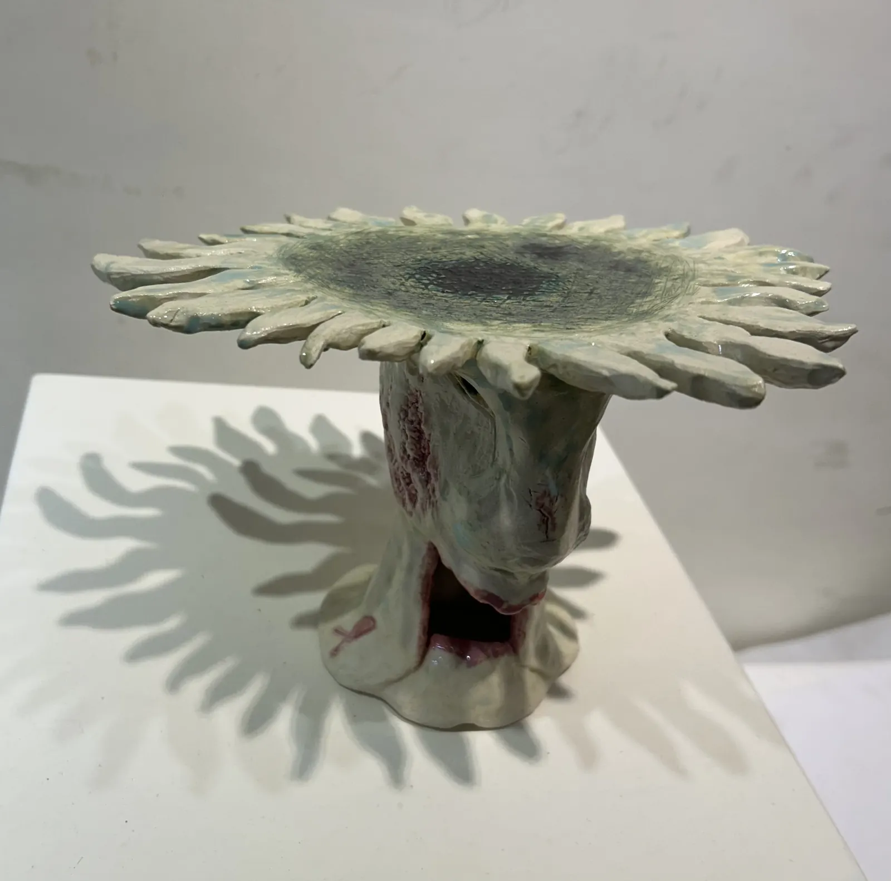
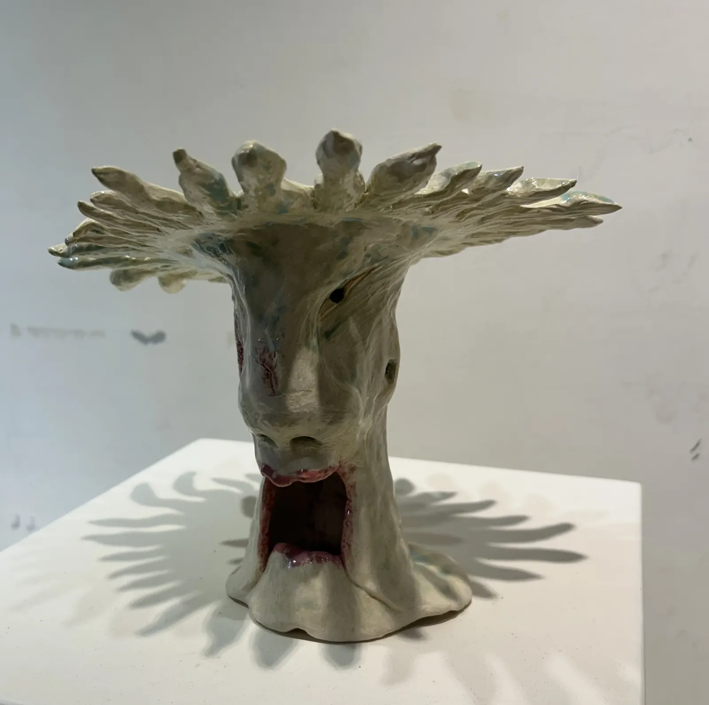
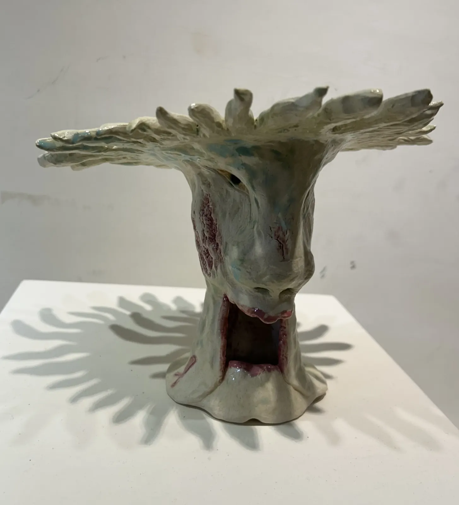
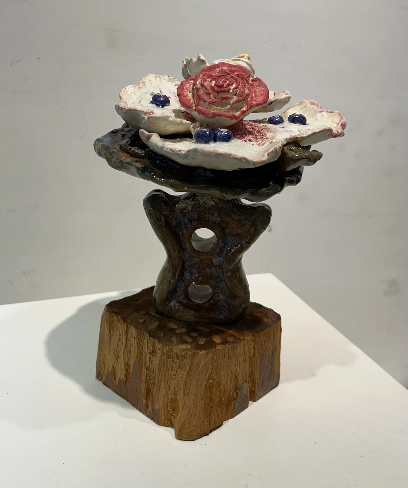
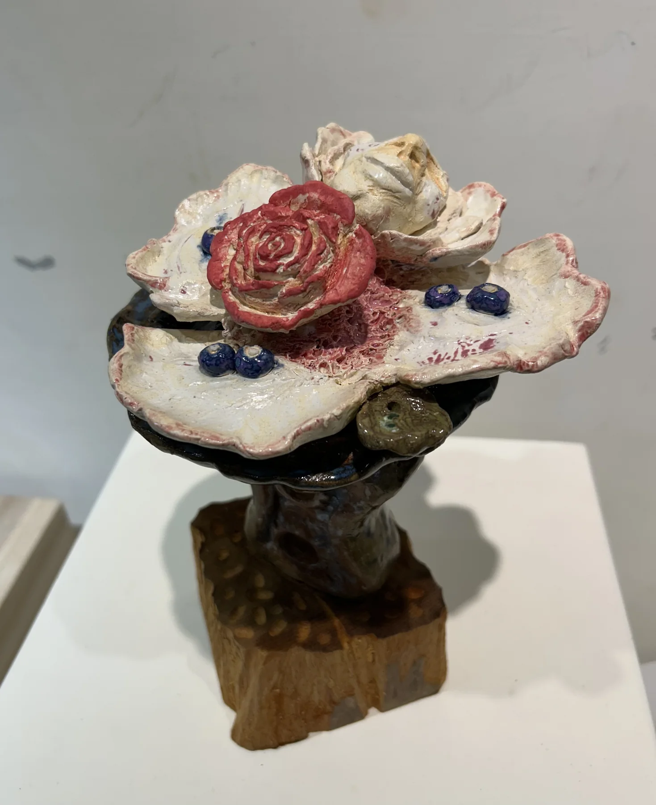
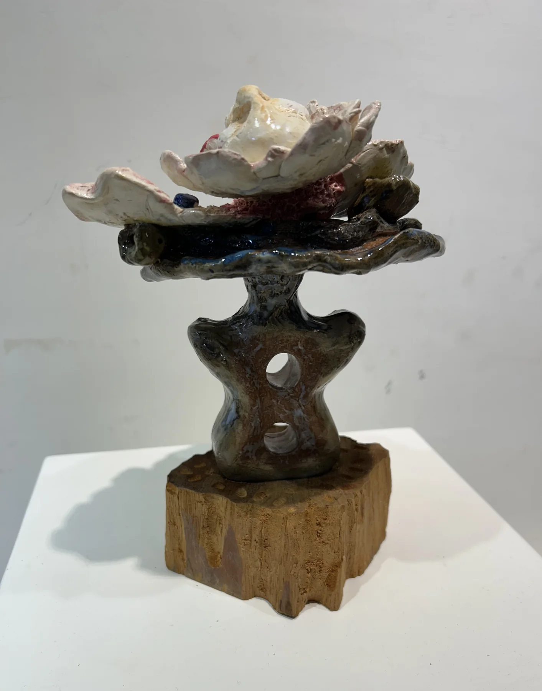

作品觀看 Work View
陶與生命容器 Ceramic Beings
這些陶作不是實用的器皿，而是承載眼睛、嘴巴、孔洞與靈魂的生命容器；它們像身體，也像一個個正在生成的小宇宙。
心生相


孤芳自賞


非花器 Not a Vase


被視之物
臉、孔洞與裂痕在陶土中浮現，像被世界凝視後留下的身體記憶。



靜鳴者



花之器


凝視之後
凝視過後，枝影、孔洞與器形仍在陶土中留下未散的回聲。


花靈之祭



樹精之舞


快樂天堂


凝視之貓


希望之翼


回眸